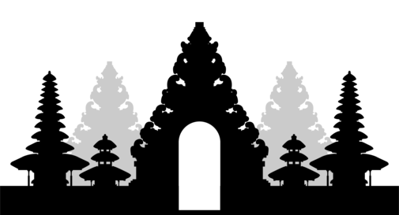

Destinasi Jiwa
Menapaki Jejak Suci Menuju Cahaya
Di balik gemerlapnya Bali, tersembunyi jalan sunyi yang menuntun jiwa kembali menyatu dengan alam dan Sang Pencipta. Bukan sekadar bangunan, pura-pura sakral ini adalah titik temu antara dunia fisik dan roh, tempat doa dan kesadaran bergetar dalam keheningan. Lima pura tersembunyi ini bukan tujuan wisata biasa, melainkan panggilan bagi mereka yang ingin menyucikan hati, bukan sekadar mengabadikan momen.
#ExploreTheUnseen
🌄 1. Pura Luhur Lempuyang
Gapura Menuju Langit
Tersembunyi di Gunung Lempuyang, pura ini simbol pembebasan dari ego dan duniawi.
📖 Makna Sakral: Pencerahan melalui pendakian.
📍 Lokasi: Karangasem
💧 2. Pura Tirta Sudamala
Pancuran Suci Penjernih Jiwa
Tempat melukat dari stres dan luka batin melalui air suci dari alam purba.
📖 Makna Sakral: Menyelaraskan aura dan energi spiritual.
📍 Lokasi: Bangli
🌿 3. Pura Dalem Pingit Sebatu
Pusat Pengelukatan Jiwa
Melukat di tempat ini dipercaya paling kuat untuk penyucian dan pelepasan batin.
📖 Makna Sakral: Melepaskan masa lalu untuk menjadi pribadi baru.
📍 Lokasi: Gianyar
🌊 4. Pura Segara Rupek
Penjaga Lautan Barat Bali
Pura sunyi di tepi tebing, menjadi benteng spiritual terakhir Bali sebelum lautan.
📖 Makna Sakral: Tempat semadi untuk keteguhan jiwa dalam keheningan.
📍 Lokasi: Taman Nasional Bali Barat
🏞️ 5. Pura Puncak Mangu
Pertemuan Langit dan Danau
Tempat di mana peziarah merasakan kesucian alam di punggung Gunung Mangu.
📖 Makna Sakral: Simbol pencarian kedamaian batin melalui kesunyian.
📍 Lokasi: Badung
✨ Menemukan Tuhan di Tengah Kabut dan Sunyi
Bali bukan hanya tempat, tapi perjalanan jiwa. Dengarkan getaran sunyinya dan temukan kedamaian sejati.